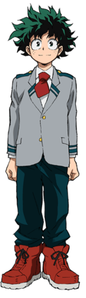

Izuku Midoriya (緑みどり谷や出いず久く Midoriya Izuku?), also known as Deku (デク?), is the primary protagonist of
the My Hero Academia manga and anime series.
Though born without a Quirk, Izuku manages to catch the attention of the legendary hero All Might due to his
innate heroism and has since become his close pupil as well as a student in Class 1-A at U.A. High School.
All Might passed on his Quirk to Izuku, making him the ninth holder of One For All.
